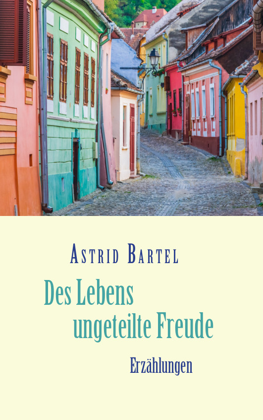

<!doctype html>
<html lang="de">
<title>Astrid Bartel</title>
<meta charset="utf-8">
<meta name="viewport" content="width=device-width, initial-scale=1">
<style>
	main {
		padding: 1.4rem;
		font-family: sans-serif;
		max-width: 46rem;
		line-height: 1.45;
		box-shadow: 0 0 2rem 0 #bbb;
		border-radius: 0.6rem;
		hyphens: auto;
	}

	nav ul {
		padding: 0;
		line-height: 1.45;
	}
	nav li {
		list-style: none;
		margin: 0.2em 0.4em;
	}
	.current {
		font-weight: bold;
	}

	@media (min-width: 48rem) {
		body {
			display: flex;
			justify-content: center;
		}
		nav {
			min-width: 10em;
			margin-right: 0.6em;
		}
		nav li {
			margin: 0.8em;
		}
	}

	h1 {
		margin-top: 0;
		line-height: 1.2;
	}
	.subtitle {
		margin-top: -1.5em;
		font-weight: bold;
		color: gray;
	}

	img {
		max-width: 100%;
	}
	img.cover {
		float: left;
		margin: 0 1em 1em 0;
		max-width: min(15em, 50%);
	}
</style>

<nav>
	<ul>
	  <li><a href="/index.html">Astrid Bartel</a></li>
	  <li><a href="/maedchen/index.html">Das Mädchen von der Quelle</a></li>
	  <li><a href="/stalin/index.html">Der halbierte Stalin</a></li>
	  <li><a href="/dem_leben_verpflichtet/index.html">Dem Leben verpflichtet</a></li>
	  <li><a class="current" href="/ungeteilte_freude/index.html">Des Lebens ungeteilte Freude</a></li>
	</ul>
</nav>

<main>
<h1>Des Lebens ungeteilte Freude</h1>




Von Menschen und Schicksalen quer durch 65 Jahre Zeitgeschehen: Einfühlsam und
mit feinem Humor erzählt Astrid Bartel in ihrem neuen Buch Geschichten aus den
Dörfern und Städten Rumäniens und Deutschlands. Die Erzählungen der gebürtigen
Siebenbürgerin sind zum größten Teil autobiografisch. Besonders sind die in
Rumänien spielenden Geschichten, denn das Leben inmitten des Völkergemischs
eines längst untergegangenen österreich-ungarischen Kaiserreichs und mitten in
einem Land, das den Sozialismus aufbaute, war ein Alltag voller Überraschungen,
Kämpfe, Kompromisse und politischer Schwierigkeiten. Die größte Herausforderung
jedoch war, zwischen der Liebe zur Heimat und der Freiheit wählen zu müssen.

<br clear="both" />

<h3>Bestellinformationen:</h3>
Bestellbar in jeder Buchhandlung, bei <a href="https://www.amazon.de/dp/375573396X/">Amazon</a>
und BoD (<a href="https://www.bod.de/buchshop/des-lebens-ungeteilte-freude-astrid-bartel-9783755733966">Hardcover</a>,
<a href="https://www.bod.de/buchshop/des-lebens-ungeteilte-freude-astrid-bartel-9783755717089">Paperback</a>,
<a href="https://www.bod.de/buchshop/des-lebens-ungeteilte-freude-astrid-bartel-9783756279067">E-Book</a>)
<br />
ISBN 973-3-7557-3396-6 (Hardcover) 24.90 Euro<br />
ISBN 978-3-7557-1708-9 (Paperback) 14.90 Euro<br />
ISBN 978-3-7562-7906-7 (E-Book) 5.49 Euro<br />
<br />

<h3>Weiteres über "Des Lebens ungeteilte Freude":</h3>

<ul>
  <li><a href="hz.html">Zeitungsbericht aus der Hermannstädter Zeitung</a></li>
  <li><a href="adz.html">Zeitungsbericht aus der Allgemeinen Deutschen Zeitung für Rumänien</a></li>
  <li><a href="drh.html">Rezension in den Deutsch-Rumänischen Heften </a></li>
</ul>
